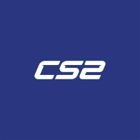
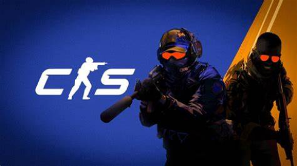
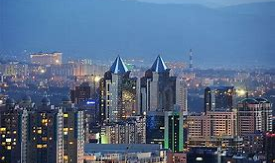
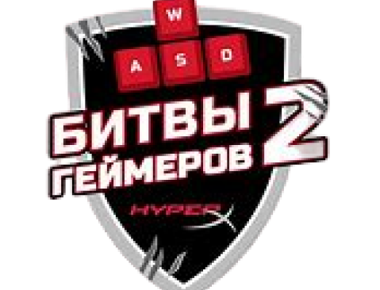
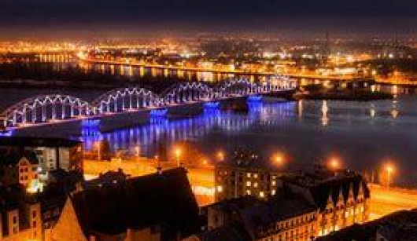
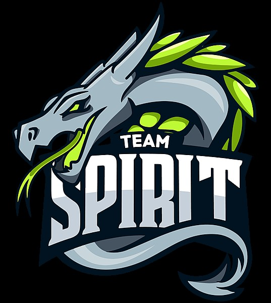

<!DOCTYPE html>
<html lang="en">
<head>
    <!-- Yandex.Metrika counter -->
<script type="text/javascript" >
   (function(m,e,t,r,i,k,a){m[i]=m[i]||function(){(m[i].a=m[i].a||[]).push(arguments)};
   m[i].l=1*new Date();
   for (var j = 0; j < document.scripts.length; j++) {if (document.scripts[j].src === r) { return; }}
   k=e.createElement(t),a=e.getElementsByTagName(t)[0],k.async=1,k.src=r,a.parentNode.insertBefore(k,a)})
   (window, document, "script", "https://mc.yandex.ru/metrika/tag.js", "ym");

   ym(96561789, "init", {
        clickmap:true,
        trackLinks:true,
        accurateTrackBounce:true
   });
</script>
<noscript><div></div></noscript>
<!-- /Yandex.Metrika counter -->
    <meta name="yandex-verification" content="cfa00814f1b75f74" />
    <meta charset="UTF-8">
    <meta name="description" content="CS2 Counter-Strike 2 cs2 reddit faceit cs2 counter strike 2">
        <meta name="author" content="Ханюков">
        <meta name="copyright" content="Kodland">
    <title>Турниры CS2</title>
    <link rel="stylesheet" href="style.css">
</head>
<body>
    
</body>
</html>
<header>
    
    <nav><a href="">Меню</a>
        <a href="">Турниры</a>
        <a href="">Свежие новости</a>
    </nav>
</header>
<main>
    <article class="banner">
        <div class="text">
            <h1>Крупнейшие Турниры по КС2 только для вас!</h1>
        </div>
        
    </article>
    <article class="Tournament">
            <h1>Турниры</h1>
            <div class="Tur-items">
                <div>
                    <div>
                        <p>И так, дорогие друзья, у нас будут турниры, онлайн турниры, вы сможете учавствовать в турнире дома со своего устройства!</p>
                        
                    </div>
                    <div>
                        
                        <p>Первый турнир у нас пройдёт в городе Алматы! (Казахстан)</p>
                    </div>
                </div>
                <div>
                    <p>Второй Турнир пройдёт в городе Рига! (Латвия).
                        Приз-скин на любой выбранный вами нож.
                        При желании вы можете прийти к нам в компьютерный клуб и по-учавствовать в наших турнирах.
                    </p>
                    
                </div>
            </div>
    </article>
    <div class="line"></div>
    <article class="time">
        <p>
            На данном жизненном этапе турниров пока что нету, все турниры будут объявлены здесь или в нашем тг канале (в процессе создания)
        </p>
    </article>
    <article class="news">
        <h1>СВЕЖИЕ НОВОСТИ</h1>
        <h2>2 Февраля</h2>
        <p>Менеджер Spirit по CS: «Вчера оператор ESL следил исключительно за Донком»</p>
        <div class="spirit">
            <p>«Мы стараемся управлять [вниманием медиа к Донку]. Мы попросили ESL не приставлять к нему оператора, потому что вчера он следил исключительно за ним. Также нам иногда приходится отклонять некоторые запросы об интервью и тому подобное», – поделился менеджер Spirit по CS Владислав «Lo9d» Дроздов.</p>
            
        </div>
    </article>
</main>
<footer>
    <a href="#"><p>Все права защищены</p></a>
    <a href="#"></a>
    <a href="#"><p>+370 111 11 223</p></a>
</footer>
